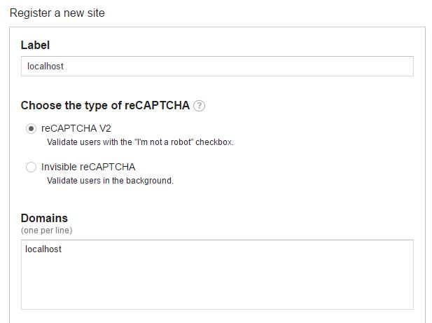
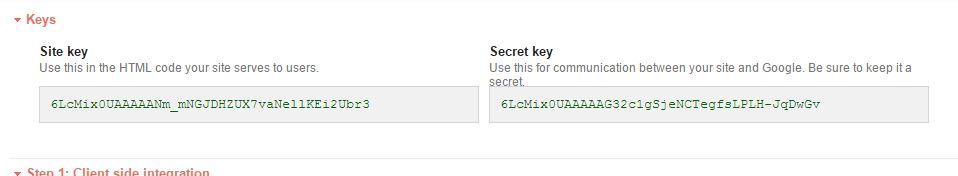
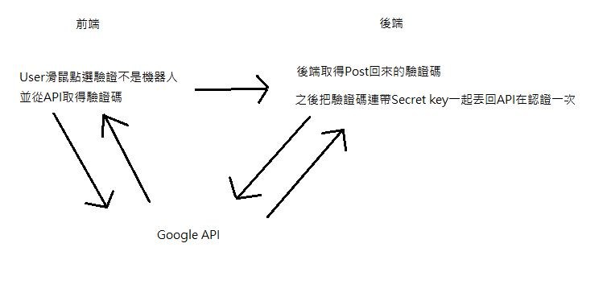
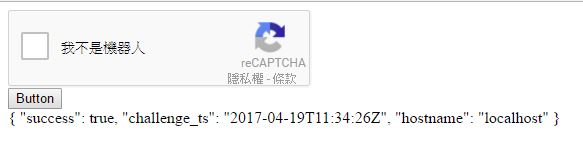
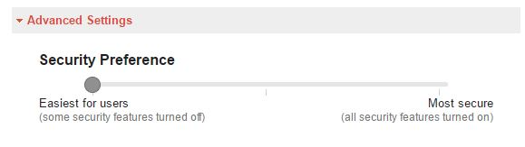

Google API - 圖形驗證reCAPTCHA使用C#
文章目錄
前言
由於最近遇到有學生暴力破解公司寫的校園平台，至於為什麼會被破解，因為當初的人沒有寫驗證類的機制(汗)，於是只好馬上開始幫忙把登入頁面重新寫一遍，要擋暴力破解的方法第一個想到的就是驗證碼，稍微google了一下發現普通的驗證碼還不少都被破解，找了半天覺得Google的reCAPTCHA還不錯，於是就決定使用這個了，然後就開始說明吧!
開始實作reCAPTCHA
註冊
首先要去官方註冊 註冊連結點這邊 因為我們要在自己的機子測試所以label和Domains都填localhost 
註冊完會得到一組Site key和一組Secret key 
reCAPTCHA的驗證流程
 驗證流程我用小畫家隨便畫了一下，大概是像上面那樣
程式實作
前端部分
先來看看 官方文件解釋 文件寫了很多，但是我覺得不是很重要，我們直接實作第二個範例
<html>
<head>
<title>reCAPTCHA</title>
<script type="text/javascript">
// 驗證成功後執行
var onSubmit = function(token) {
$('#captchaToken').val() = token;
};
var onloadCallback = function() {
grecaptcha.render('reCAPTCHA', {
'sitekey': '自己的site_key', // 這邊填寫自己的site_key
'callback': onSubmit // 執行成功後onSubmit變數接收
});
};
</script>
</head>
<body>
<form method="POST">
<div id="reCAPTCHA"></div>
<input id="captchaToken" name="captchaToken" type="hidden" />
<input name="submit" type="submit" />
</form>
<script src="https://www.google.com/recaptcha/api.js?onload=onloadCallback&render=explicit" async defer></script>
</body>
</html>
範例我有稍微改寫了一下，然後開始解說，我有在裡面加一個hidden的input，驗證成功後剛剛建立的input會接收回傳的token，然後使用者登入後就會把token傳回到後端
後端部分
再來看看官方的後端文件 官方文件解釋2 前面一堆廢話就不用看了，直接看API Request和API Response的部分 我們需要POST三個值到https://www.google.com/recaptcha/api/siteverify這位置上，然後官方丟回驗證是否成功的JSON字串回來。 然後就來開始實作吧!
// 確認是否有Token回傳回來
if (Request.Form["captchaToken"] == "")
{
Msg.Text = "請確認是否為機器人";
}
else
{
// 建立一個HttpWebRequest網址指向Google的驗證API
var req = (HttpWebRequest)HttpWebRequest.Create("https://www.google.com/recaptcha/api/siteverify");
// Post的資料
// secret:secret_key
// response:回傳的Token
// remoteip:設定的Domain Name
string posStr = "secret=自己的secret_key&response=" + Request.Form["captchaToken"] + "&remoteip=" + Request.Url.Host;
byte[] byteStr = Encoding.UTF8.GetBytes(posStr);
req.Method = "POST";
req.ContentType = "application/x-www-form-urlencoded";
// 把要Post資料寫進HttpWebRequest
using (Stream streamArr = req.GetRequestStream())
{
streamArr.Write(byteStr, 0, byteStr.Length);
}
// 取得回傳資料
using (var res = (HttpWebResponse)req.GetResponse())
{
using (StreamReader getJson = new StreamReader(res.GetResponseStream()))
{
string json = getJson.ReadToEnd();
Msg.Text = json;
}
}
}
我們用C#模擬HTML的form POST給google API認證，Msg物件則是是用來存放訊息用的，如果成功就會變跟下圖一樣  如果錯誤的話success會是false。
補充
reCAPTCHA申請完後再進去設定裡會多一個Advanced Settings，可以用來調整驗證通過的難度 
後記
其實這個API算簡單才花1天就做好了，Google登入這個還比較難，官方文件寫得亂七八糟，還好這個寫得很清楚流程又簡單，就當是又學到一個好東西(完)。